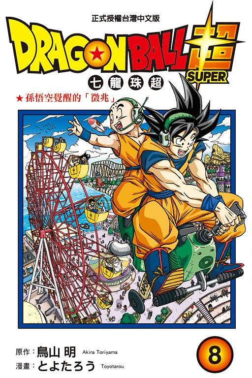

| 漫画 | 动漫 | 人物 | 电影 | 游戏 |
 |
龙珠在漫画连载期间与另外同时期连载漫画《幽游白书》和《灌篮高手》在过去曾经被称为“JUMP三台柱”（ジャンプ三本柱），这三部作品让周刊少年Jump在1995年首次创下单周653万册的销量记录，并且在相继连载结束后导致周刊的销量急遽下滑。单行本加完全版的漫画发行量在日本达到1亿6000万册以上。电视动画连续播放11年以来的平均收视率高达20%以上，主题曲CD专辑“CHA-LA HEAD-CHA-LA”的销售量超过170万张。前16作剧场版总共创下发售50万套以上，票房收入400亿日圆以上的累计记录。 前期缓慢舒展且饱含张力的剧情，赛亚人篇身世之谜的揭晓+前所未有的风格转变，那美克星篇仇敌元凶显露真容+宿命对决绝望逆转，人造人篇BOSS切换时空穿越+寓意彰显主题升华，魔人布欧篇风格回归传说落幕，高超的绘画功底，灵活拿捏的分镜技巧，几无败笔的人物设定，能够在当年风起云涌的JUMP舞台上拔得头筹也是实至名归。 |
|  | 2015年8月号在V-Jump连载并由丰太郎担任作画。内容与动画版有些不同并有些剧情与剧场版相同，动画版放播前已经开始连载。漫画版把有关故事浓缩，部分剧情追加一些描写、剧情发展更流畅，跳过“黄金弗利萨篇”的剧情并立刻开始“第6宇宙 vs 第7宇宙篇”。单行本方面，已于2016年4月4日发行第一卷。另外鸟山明与丰太郎把“第6宇宙 vs 第7宇宙篇”重命名为“第六宇宙篇”，“宇宙生存篇”重命名为“力之大会篇”。目前漫画版的进度比动画版快。另外为了赶上动画的进度，自第9话起页数大多都在39页左右。第21话起增加到45页。漫画版也跳过“布罗利篇”的剧情并立刻开始“银河巡逻囚犯篇”（銀河パトロール囚人編）。 |
制作者：孙思远